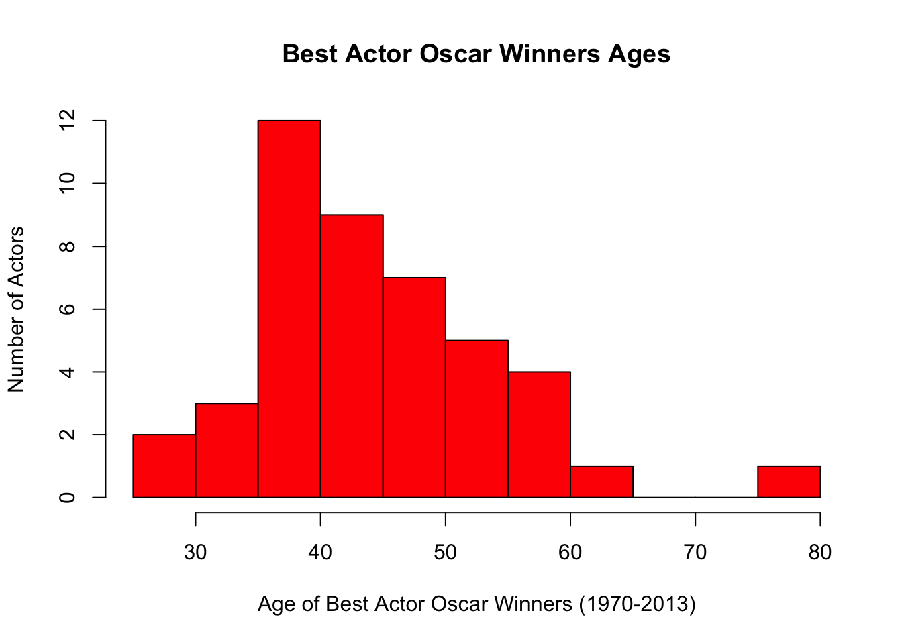

In this section, we will explore the data collected from a quantitative variable, and learn how to describe and summarize the important features of its distribution. We will first learn how to display the distribution using graphs and then move on to discuss numerical measures.
To display data from one quantitative variable graphically, we can use either the histogram or the stemplot.
Load the data
load("data/actor_2013.RData")Get a quick summary
summary(actor_age)## Age
## Min. :29.00
## 1st Qu.:38.00
## Median :43.50
## Mean :44.98
## 3rd Qu.:50.25
## Max. :76.00Create a histogram of the actors’ age.
hist(actor_age$Age, breaks=8, xlab="Age of Best Actor Oscar Winners (1970-2013)", ylab="Number of Actors", main="Best Actor Oscar Winners Ages", col = 'red')
The overall pattern of the distribution of a quantitative variable is described by its shape, center, and spread. By inspecting the histogram, we can describe the shape of the distribution but we can only get a rough estimate for the center and spread. A description of the distribution of a quantitative variable must include, in addition to the graphical display, a more precise numerical description of the center and spread of the distribution. In this section we will learn:
The three main numerical measures for the center of a distribution are the mode, the mean and the median. Each one of these measures is based on a completely different idea of describing the center of a distribution.
In order to describe the distribution, we need to supplement the graphical display not only with a measure of center, but also with a measure of the variability (or spread) of the distribution.
In this section, we will discuss the three most commonly used measures of spread: